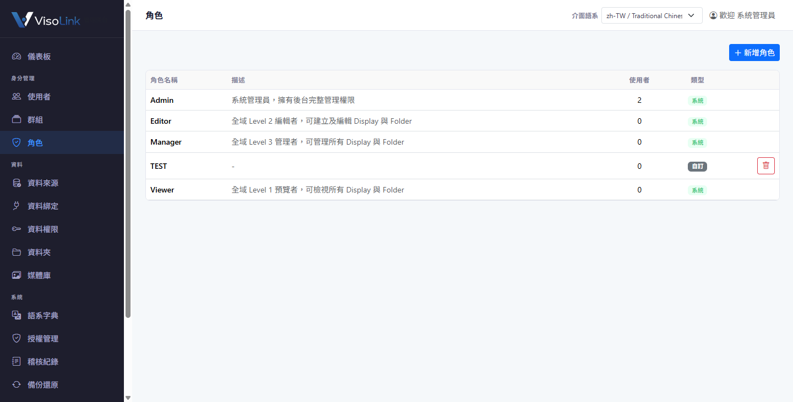
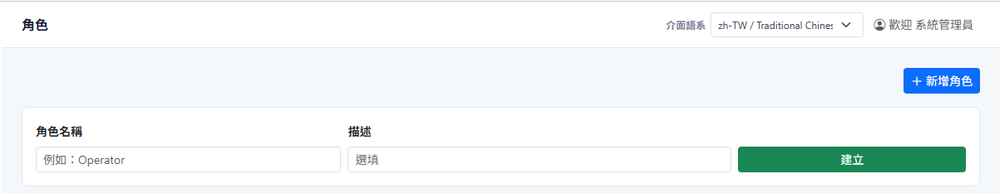

Roles 角色
角色描述管理責任並指派給使用者；資料與圖面存取仍由相應權限規則決定。
瀏覽角色清單

- 點選「身分管理 → 角色」。
- 查看各角色的使用者數與類型。
- 變更前先確認哪些帳號正在使用該角色。
建立自訂角色

- 點選「新增角色」。
- 輸入唯一且能代表職責的角色名稱。
- 輸入說明後點選建立。
- 前往 Users 將角色指派給適用使用者。
新角色顯示為 Custom，並可在使用者編輯頁被選取。
辨識系統與自訂角色
系統角色由產品提供並受到保護；自訂角色由管理者建立，可依組織命名及刪除。
| 類型 | 管理方式 |
|---|---|
| System | 用於產品既定管理責任，不提供刪除。 |
| Custom | 可依職責建立並指派；移除前需確認使用者數。 |
刪除自訂角色
- 確認目標為 Custom 且不再需要。
- 先從所有使用者移除該角色。
- 點選刪除並確認。
- 確認角色已從清單消失。
限制：System 角色不提供刪除。